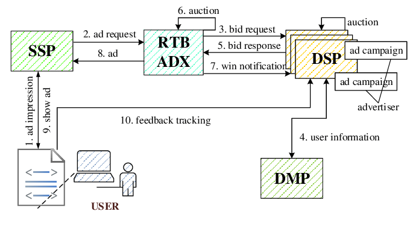
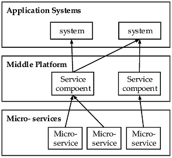

The general process of and ads delivery in DSP
Demand Side Platform(DSP)
The demand-side platform for advertising aims to provide advertisers with a user-friendly, all-in-one advertising solution across various media channels, platforms, and devices. By integrating and analyzing data, it enables precise targeting based on audience preferences while offering real-time monitoring and continuous optimization. This comprehensive platform is aptly named "demand-side" as it caters to the unified advertising needs of advertisers. With its ability to connect multiple media resources, DSP facilitates integrated marketing and precision targeting through audience data analysis.
Real Time Bidding(RTB)
After specifying your target audience and budget for advertising, there will be a competitive bidding process among other advertisers who are also trying to reach the same audience. During the time between when a potential customer lands on the page and when it fully loads, an algorithm will determine which ad to display based on factors such as browsing history, time of day, and IP address. Once all the binding data is collected, the highest bidder will secure the position.
b) Duty
Applied machine learning algorithms in Click-through rate (CTR) and conversion rate (CVR) prediction to optimize advertising placement strategies,
leading to a 20% uplift in advertising revenue
Led the strategic overhaul of system architecture, significantly increasing service availability, leading to a transition
from handling 100 million to 10 billion daily requests
Optimized data processing algorithms to enhance service performance, reducing interface response time from over 1
second to within 60 milliseconds
Due to the company's inadequate data architecture, which has led to a limited ability to provide
efficient data services, high costs for data computing, and a lack of real-time computing capability,
it has become challenging to ensure effective management of the data.
Therefore, there is a need for reconstructing the current big data architecture.
We implemented Lambda architecture to enhance real-time computing capabilities,
utilized Kafka, which is a distributed message system based on an immutable log,
for storing data streams. The Batch Layer employed HDFS of Hadoop and ODPS of
Alibaba Cloud for storing datasets. The Batch View process, for precomputation tasks,
used MapReduce, Spark, and MySQL for querying recent data, while
Alibaba Cloud's ADB and HBase are employed for querying historical data.
The Speed Layer employs Flink and Spark Streaming for incremental data processing.
To ensure real-time efficiency, we utilized Redis as the cache for real-time calculation.
Based on the optimized big data architecture, we developed services such as
Ip tag service, Location ID service, and device identification.
b) Duty
Employed Flink to process IP data, updating IP tags realtime
Implemented data processing from the ODS layer to the DWD layer and ensuring proper
data output to the DIM layer for downstream server usage
Preprocceed data using Flink and ODPS for neural network training and prediction in device identification and Location ID clustering.
Equipment such as mobile phones and computers plays a crucial role in the Internet risk control system. IP addresses and mobile phone numbers are valuable resources for operators, enabling them to gather essential risk attributes and data. On the other hand, users have direct control over their devices, allowing us to access various device information for effective risk control. The dimension of device data is extensive, and by implementing appropriate device idendify rules, we can greatly enhance protection measures. In order to counteract the risk control technology employed by equipment manufacturers, the illegal industry is continuously exploring innovative technologies, with machine-modification tools being particularly noteworthy.
The marketing activities of Internet business platforms typically involve the following customer terms that are commonly seen.
Only one participation is allowed per registered account.
Participation is restricted to a single occurrence per mobile phone number.
Each device can participate only once.
Certainly, these terms cannot solely depend on the customer's conscious compliance; they should be enforced through background limit policies. the illegal industry employs a limited number of authentic devices to generate an extensive array of counterfeit ones. How to identify the two participants are the same device is challenging.
Goals
The criminal group usually use the same device multiple times with modified data to pretend new devices, but not all of fields can be modified due to cost constraints. Therefore, by analyzing the reported data from each device, we can know what kind of report data are from the same device. We can use neural network to learn the pattern in our existing data, having the ability to identify devices, thereby preventing criminal groups from modifying device data for illegal purposes.
Implementation
Extract device report data.
Aggregate the exact reported data from the same device in order to supplement the null value of the field.
Use regex to filter data that doesn't conform to the field specification.
Forming data group pair: the data reported by the same device in different months are formed into the same data pair. The data reported by different devices in different months are composed of different data pairs.
Transformation: Compare the data pairs field by field. For the ID type, the same field value is marked as 1, and the different field value is marked as 2. For numeric data, calculate the difference.
The generated data is used as training data and test data.
CRM (customer relationship management) is the combination of practices,
strategies and technologies that companies use to manage and analyze customer
interactions and data throughout the customer lifecycle. The goal is to improve
customer service relationships and assist with customer retention and drive sales
growth. I have participated in multiple projects of the CRM system,
including the Communication Products Marketing Platform and the Restaurant Marketing platform.
b) Projects
Communication Products Marketing Platform

This is a service that offers communication products for sale, catering to sales personnel and providing marketing programs to try out. It also includes functions such as data statistics, commodity management, order management, and commission settlement. The platform follows a three-tier architecture consisting of the front-end platform, middle platform, and backend platform.
The front-end platform serves as the application layer that directly interacts with end users. Taking e-commerce platforms as an example, the app, H5 end, pc end, and mini program we use daily all belong to the front-end system of e-commerce.
The backend platform remains unseen by the end user. Its value lies in storing and processing the essential data of the enterprise. For instance, supply chain management systems store product and inventory information, while customer management systems hold user details.
The arise of middle platform: To meet both the fast-paced needs of the front office and the stability requirements of the backend, a product architecture is formed with three layers: "front-end (application layer) - middle (logic layer) - backend (data layer)". This architecture enables quick responsiveness from the middle platform when demands arise on the current platform, thereby enhancing research and development efficiency and reducing innovation costs.
I played a key role in developing the middle platform, which involved utilizing Spring Boot to create microservices. These microservices were categorized into user center, commodity center, order center, and marketing center within the platform. Through the integration of Spring Cloud components, all these microservices were effectively organized together to form a comprehensive set of front-end and back-end functionalities. This enabled us to promptly adapt to changing demands and enhance the traditional "software platform". By introducing new rules for specialized function allocation and data modeling at an enterprise level, we successfully addressed issues such as redundant work within our team (reinventing the wheel) as well as function boundary division between software platforms and data isolation.
Restaurant Marketing platform
A mobile marketing platform has been developed for the restaurant, utilizing WeChat (the largest communication social software in China), to effectively manage restaurant members. This includes user-friendly features like food ordering, recharging, coupons, games, activities to engage users who have been inactive and attract new ones. In this project, my main responsibilities involved integrating with the WeChat interface and implementing user authorization along with terminal message push functionality. Additionally, I created a distributed file storage service based on FastDFS to provide essential storage support for the company's technical team.
It is a web project that calculates the probability of
experiencing a stroke based on user-input physical indicators. The project involves integrating backend, frontend,
and machine learning algorithms to train a model using an 11-feature clinical dataset for stroke prediction. The
goal is to provide real-time prediction results based on the trained model.
b) Duty
Developed a web application that calculates the probability of experiencing a stroke based on user-input physical
indicators.
Implemented machine learning algorithms (Decision Tree) using R, tuning parameters and optimizing model